Service Mesh Virtual Meetup 是 ServiceMesher 社区和 CNCF 联合主办的线上系列直播。本期为 Service Mesh Virtual Meetup#1 ，邀请了四位来自不同公司的嘉宾，从不同角度展开了 Service Mesh 的应用实践分享，分享涵盖来自陌陌和百度的 Service Mesh 生产实践，Service Mesh 的可观察性和生产实践以及与传统微服务中可观察性的区别，还有如何使用 SkyWalking 来观测 Service Mesh。
本文根据5月6日晚，陌陌中间件架构师高飞航的主题分享《陌陌的 Service Mesh 探索与实践》整理。文末包含本次分享的视频回顾链接以及 PPT 下载地址。
前言
本次演讲为大家分享的是陌陌目前正在进行的 Service Mesh 实践的相关内容。共分为三个部分：
- 第一部分是原有微服务架构的相关背景；
- 第二部分是原有架构遇到的问题以及决定采用 Service Mesh 方案的思考过程；
- 最后的部分对Service Mesh落地实践的方案进行介绍；
陌陌微服务体系演进历程
单体应用到微服务
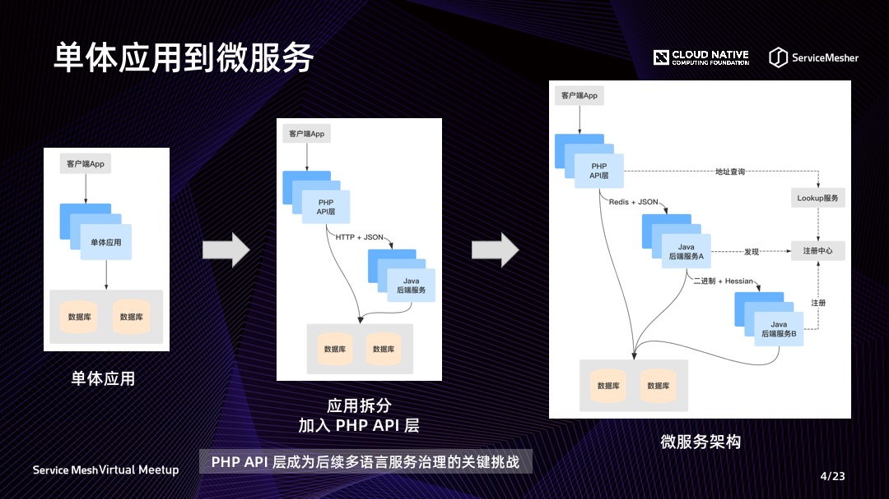
各个应用的发展过程，都会经历从单体应用、到应用拆分再到微服务架构这样一个过程。陌陌的这个演进过程，有一点比较特别的是，在应用拆分时加入了由 PHP 开发、与客户端 App 进行对接的 API 层，并采用 Java 开发底层具有复杂运算的业务逻辑，这样能够兼得 PHP 的开发效率与 Java 高性能的优势。
但这个选择的影响也是十分深远的，由于 PHP 在业务中的比重很高，我们在后续进行微服务改造和服务治理时，需要不断地去应对多语言架构带来的挑战。
微服务体系演进
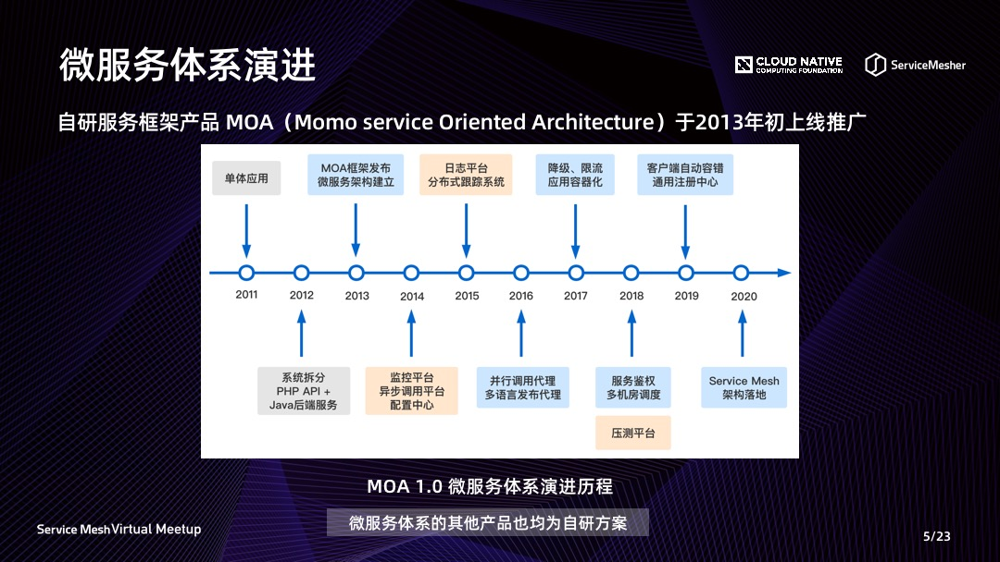
陌陌的微服务架构改造从 2013 年就开始了，在当时还没有较为完善的服务框架产品的情况下，我们自研了服务框架产品 MOA，支撑了陌陌 IM、附近动态、直播、短视频等核心业务的高速发展历程。
在多年的迭代发展中，我们逐步完善了服务框架产品功能，同时也扩充了其他基础架构产品，最终形成了一个完善的微服务体系。其他基础架构产品也都是采用了自研的方案，因此整体是一个非常定制化的架构。这一点也成为后续 Service Mesh 落地选型时重点要考量的因素。
微服务体系整体架构
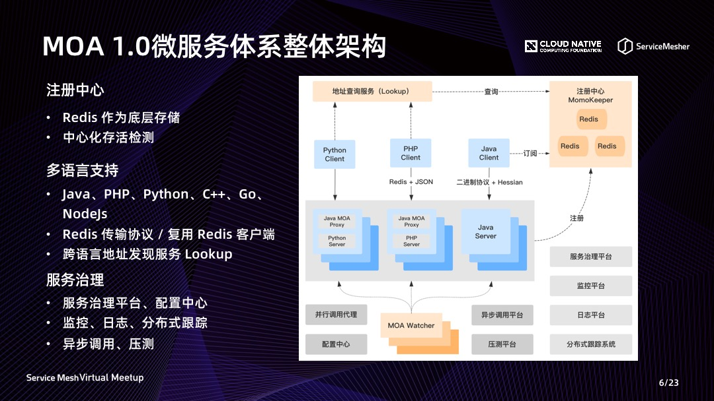
下面对微服务体系的整体架构进行介绍。我们采用了一个 Redis 作为底层存储的注册中心。服务实例的存活检测主要依赖一个中心化的检测应用 MOA Watcher，能够将无法连通的实例从注册中心的在线列表中移除、摘除实例的业务流量。
在多语言支持方面，我们除了支持最核心的 Java 与 PHP 应用之外，后续还支持了 Python、C++、Go、NodeJS 等非常多的语言接入微服务体系。由于陌陌的中间件团队是以 Java 工程师为主导的，服务框架组件的核心产品也是一个 Java 的 SDK。在没有足够的资源投入到其他语言 SDK 开发的情况下，我们采用了很多能够简化多语言开发工作的方案。
例如跨语言调用和 Java 应用内部调用会采用不同的协议，Java 内部是较为传统的自定义二进制传输协议与 Hessian 序列化，跨语言则采用了 Redis 传输协议与 JSON 序列化。Redis 协议分别利用 GET 命令的 key 和 value 的位置传递 Request 和 Response，这样每种语言都可以基于成熟的 Redis 客户端开发 SDK，避免重复编写复杂的网络通信逻辑。此外还增加了一个地址发现服务 Lookup，使其他语言能够像调用普通服务的方式，轮询获取目标服务地址。跨语言场景的这些方案虽然简化了开发工作，但却不是最优方案。这也为整体架构的长期发展埋下了隐患。
微服务体系的其他产品还包括统一的配置中心、监控平台、日志采集平台、分布式跟踪系统等，这些都是为微服务体系保驾护航的重要基础架构能力。
流量代理机制
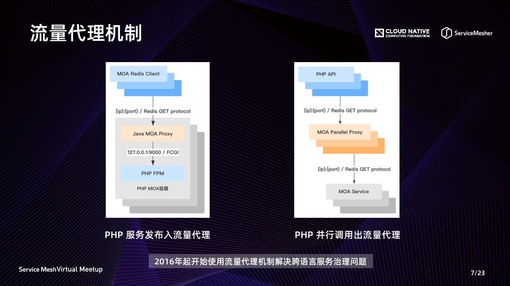
在多语言支持的场景中，我们很早就采用了两个和 Service Mesh 非常相近的方案。一个是为了支持多语言发布服务的入流量代理方案，使用 Java 开发的 Proxy 复用了 Java SDK 注册发现与监控等诸多服务治理能力，使得其他语言仅简单处理本地请求后就能实现发布服务。这些 Java Proxy 与多语言的业务进程是 1:1 部署的，但当时的方案是和业务进程放在一个容器里，升级时需要和业务进程一起重新发布。
另外一个方案是为了解决 PHP 并行调用下游服务而实现的出流量代理，但这个方案中代理层的进程是运行在独立的服务器上，没有部署在与调用端相同的服务器。
我们将流量代理机制应用于多语言服务治理的经历，在某种程度上突显了 Service Mesh 的价值，我们可能想到类似的方案去解决问题，但都没有像 Service Mesh 一样系统地给出一种最佳方案。不过这些相近方案的经验是有助于我们后续去推进 Service Mesh 落地的。
微服务体系规模
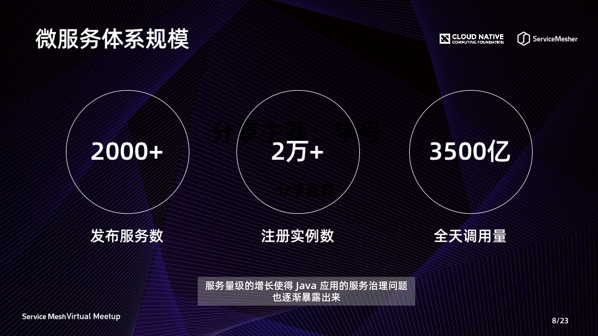
随着业务的发展，整个微服务体系也达到了一个很具有挑战的量级。特别是在服务数量大幅增长后，Java 应用的服务治理问题也逐步暴露出来，其中最难以解决的是 SDK 升级的问题，这一点也是进一步推动我们转向 Service Mesh 架构的原因。
借助 Service Mesh 解决现有架构痛点
架构痛点分析
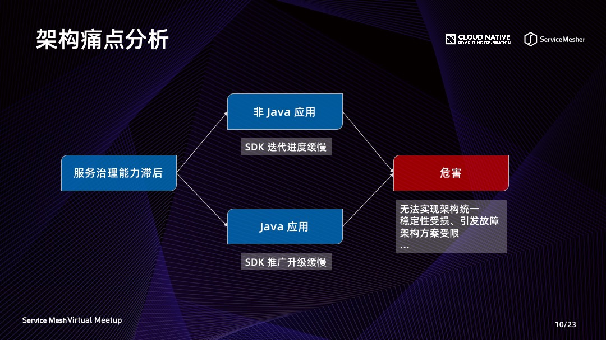
前面我们提到的各种问题，其实都可以归结为微服务体系中服务治理能力滞后的问题。对于非 Java 的应用，由于没有足够的开发资源，会导致服务框架的 SDK 迭代进度非常缓慢。对于 Java 应用，虽然 SDK 具备最完善的功能，但使全量应用完成升级需要耗费大量人力和时间。根据以往的经验来看，一次推广至少需要一个季度的时间，并且为业务团队带来很多不必要的负担。
两种场景最终的危害是一致的，都会导致架构能力上无法实现统一，先进的功能无法覆盖到全部应用，使应用稳定性受到损失，甚至引发故障。我们在多语言方案中依赖的中心化的 Lookup 服务，曾经就因为一次服务异常导致整个 API 层不可用，原因就是 PHP 的 SDK 采用了一种有缺陷的机制没有升级。在我们设计新方案时，也会因为架构能力无法统一而无法采用最佳的方案。例如我们在设计多机房架构时，由于流量调度机制无法快速覆盖到全部应用，因此只能采用从应用入口整体调度流量的一种粗粒度的方案。
引入 Service Mesh
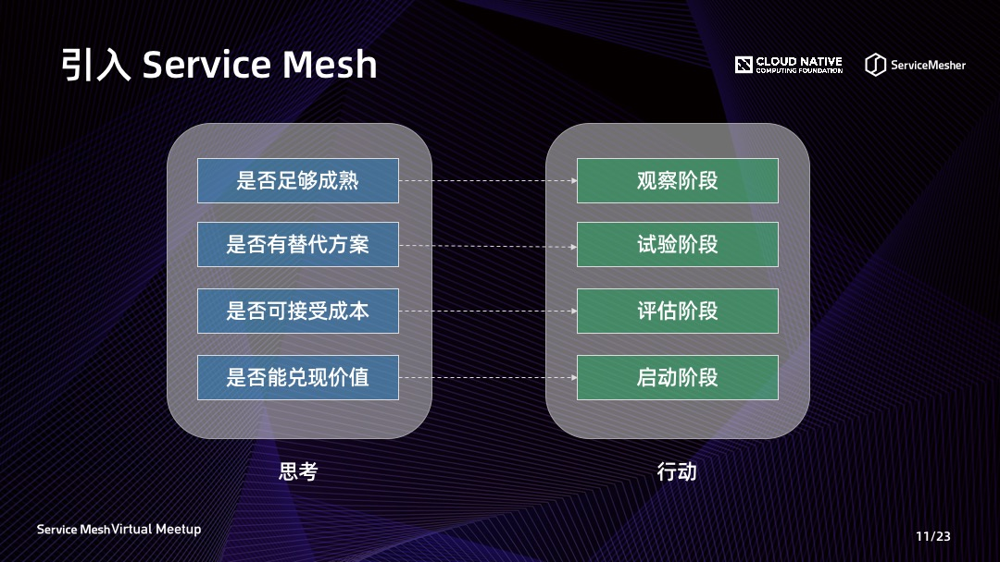
Service Mesh 将基础架构逻辑与业务逻辑解耦、并支持独立升级的方式，能够很好地解决前面描述的架构痛点。但引入 Service Mesh 是一项非常重大的架构变更，并且需要多方面的成本投入。因此在实际落地实施前，我们必须思考以下几个问题，并在不同阶段完成对应的工作。
- 第一个是方案是否足够成熟。这里的方案不局限于 Service Mesh 本身，也依赖公司内其他基础设施的演进积累。例如我们在观察阶段实现了应用容化的推广覆盖、日志 Agent 方案的经验积累等。
- 第二个是遇到的问题是否有其他替代方案。例如我们之前急需在多语言场景覆盖的一个能力是流量调度机制，尝试过一个只提供地址路由机制，不代理流量的 Agent 方案。但发现很多逻辑还是要保留在 SDK 中，最终放弃了这个方案。
- 第三点是能否接受方案带来的成本，包括性能损耗、服务器消耗、研发投入等。评估阶段我们在性能损耗方面做了非常详尽的分析，给出采用 Service Mesh 方案后对顶层 API 接口耗时增长的影响。
- 第四点是这项方案带来的价值，是否是当前最迫切需要的？公司或部门在不同阶段会存在不同的目标。只有契合团队的整体目标，相关工作才能得到最大的支持、顺利启动与开展。大家在推广 Service Mesh 方案时，也不妨等待一个最佳的时机。
Service Mesh 架构在陌陌的落地实践
方案选型
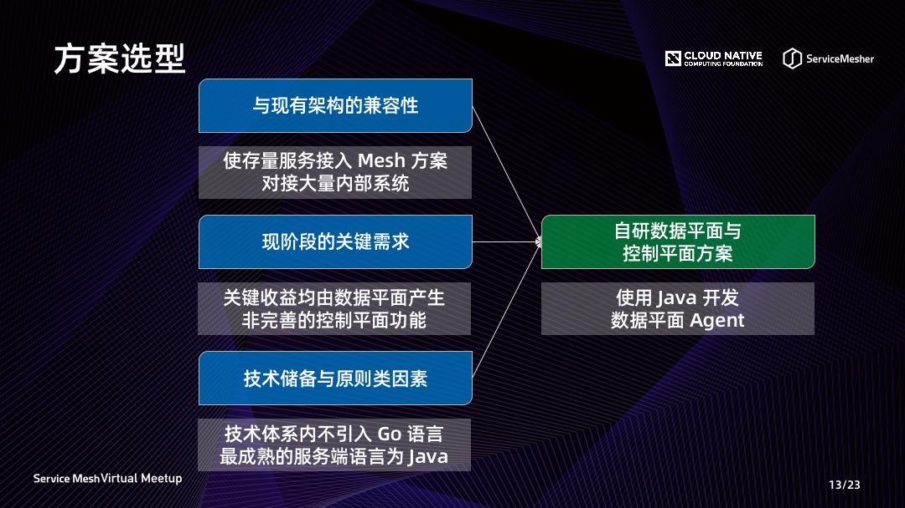
在 Service Mesh 领域当前最热门的开源方案是 Istio，但也有很多像蚂蚁金服、美团等公司采用了自研的方案。在这两个方向的选择上，我觉得最重要的还是要结合公司的实际情况。在陌陌的场景下，我们重点考虑了三方面的问题。
- 第一点是与现有架构的兼容性。我们的首要目标是使存量服务接入 Service Mesh 方案，而不是构建一个全新的应用，并且我们需要对接大量自研的内部系统。这一点上我们倾向使用自研的方案。
- 第二点要考虑现阶段的关键需求。当前最迫切需要解决的是多语言服务治理与 SDK 升级的问题，这两个关键的收益都是由数据平面产出的，暂时并不急需完善的控制平面功能。在这一点上我们倾向于优先实现数据平面方案的落地，并通过自研的方式逐步建设控制平面功能。
- 第三点是技术储备与原则类的因素。目前我们整体架构中没有核心的业务或组件是用 Go 语言来开发的，也无法快速补充人才储备来支持 Go 语言方案快速开发与长期维护。Java 是我们积累最多的服务端开发语言，原有的服务框架产品也能够提供很多直接的实践经验。
综合上述原因，我们最终选择了数据平面与控制平面均自研的方案，并采用 Java 开发数据平面的 Proxy Agent。
MOA Mesh 整体架构
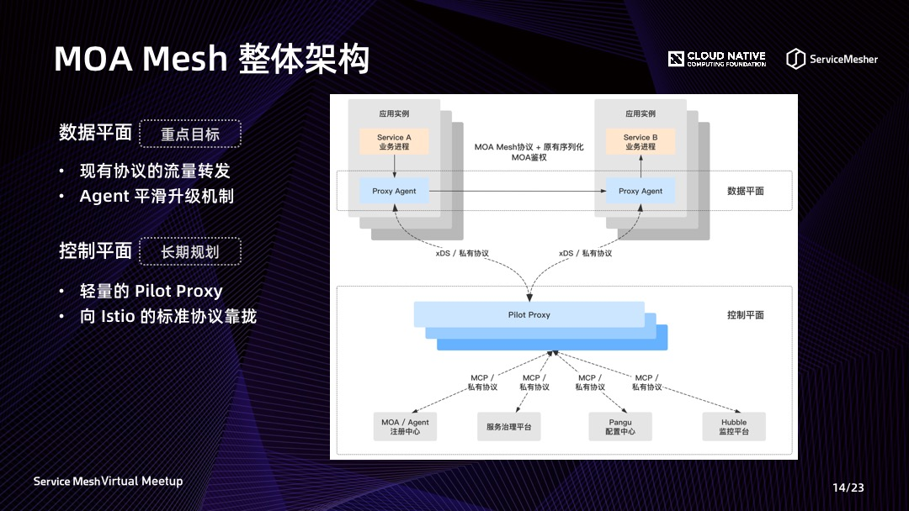
在我们的 MOA Mesh 整体架构中，数据平面是我们现阶段的重点目标。代理流量的 Agent 需要支持现有服务调用请求的转发，并具备平滑升级机制以实现独立的迭代升级。
控制平面会作为一项长期的规划逐步进行建设，当前的方案中计划增加一层轻量的 Pilot Proxy，以实现数据平面与其他内部系统的解耦。Pilot Proxy 与其他组件、系统的交互协议，将优先采用 Istio 的标准协议，为长期向社区方案靠拢提供可能。
数据平面实现细节
在数据平面的实践细节部分，会重点向大家介绍三个关键环节的设计方案，与三个需要重点关注的问题。
部署方式
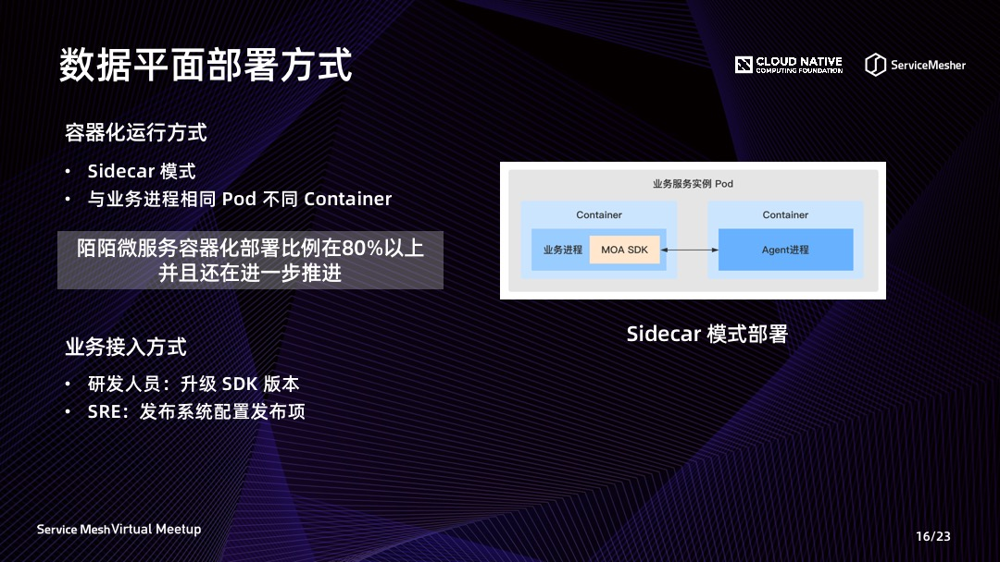
第一项关键的方案是部署方式。Agent 会采用 Sidecar 方式，与业务进程 1:1 部署。在容器化场景，Agent 会运行在与业务进程相同的 Pod、不同的 Container 中。由于陌陌当前微服务的容器化部署比例很高，这种容器化方案已能覆盖大多数的业务场景。少数物理机或虚拟机部署的场景，可以通过一些定制化的方案解决。
业务在接入 Mesh 方案时，目前没有依赖 iptables 机制，而是通过一次 SDK 升级让新版 SDK 将流量发送给本地的 Agent。这一点上我们觉得如此重大的架构升级，让业务升级一次 SDK 是可以接受的。升级步骤中还加入了一个发布项配置，使运维同学能够更灵活地开启或关闭 Service Mesh 运行模式。
升级方式 - 平滑升级机制
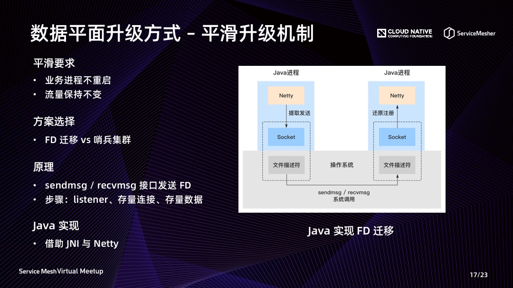
第二项关键的方案是平滑升级，这项方案是能否实现数据平面独立迭代升级的关键机制。我们需要实现升级过程不需要业务团队参与，具体需要做到业务进程不重启、并且使业务进程的流量保持不变。
在实现方案上，我们有过一次比较深入的讨论，是采用类似于 MOSN 的 FD 迁移方案，还是采用将流量临时切换到公共 Agent 集群的方案。最终我们选择了对业务感知更少的 FD 迁移方案，这一点上 MOSN 为我们做了很好的示范、取得了很好的效果。
FD 迁移的原理方面，社区中介绍的文章很多，这里不详细展开讲解了。对我们的一个新挑战是，如何用 Java 来实现 FD 迁移？因为 Java 并不像 Go 语言一样，可以直接调用 send 和 recv 以及其他操作系统底层的接口。对 Java 来说，至少要通过 JNI 调用这些底层接口的方式来实现。幸运的是 Java 的网络库 Netty 已经实现了相关 JNI 调用的封装并提供了 SO 库，我们可以直接基于 Netty 的 Java API 实现 FD 迁移机制。
云原生网络代理 MOSN：https://github.com/mosn/mosn
升级方式 - 发布流程
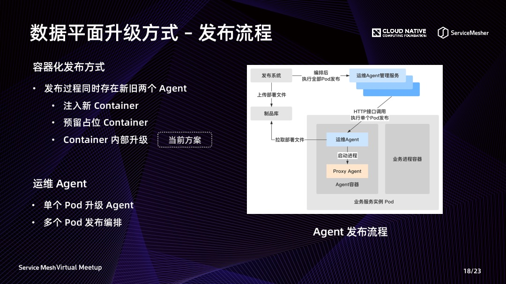
FD 迁移只解决了新旧 Agent 平滑替换的问题，Agent 升级还需要一套完整的发布流程来支持。由于 FD 迁移要求升级过程中同时存在新旧两个 Agent，针对这个场景我们考虑了三个备选方案。
- 第一个是像 MOSN 一样，通过注入一个新的 Container 来启动新 Agent 进程，但注入 Container 的机制原生的 K8s 是不支持的，需要通过修改源码才能实现。目前我们认为修改 K8s 源码后期维护成本太高，是无法接受的方案。
- 第二个方案是预留一个占位的 Container，Pod 启动时 Agent 运行在1号 Container，需要升级时在2号 Container 启动新 Agent。虽然这种方案能实现平滑升级，但 Agent 实际运行在哪个 Container 的状态是难以维护并且和其他发布流程冲突的，因此这个方案也无法被接受。
- 最后我们采用了第三种方案，让 Agent 在同一个 Container 内部完成升级。在原来的 Container 里面启动新 Agent，完成升级后旧 Agent 进程退出。但这种方案无法再通过 Agent 容器镜像来发布 Agent，而是需要在 Container 中拉取新 Agent 的部署文件并启动进程。这项运维操作，我们通过增加一个新的运维 Agent 进程来实现。
运维 Agent 随 Container 启动，后续 Proxy Agent 的部署工作，均由运维 Agent 管理。运维 Agen t提供 HTTP 接口，接收运维 Agent 管理服务发送的部署操作指令，完成单个 Pod 的 Proxy Agent 升级。而一个应用全部 Pod 的升级流程，由发布系统编排并调用运维 Agent 管理服务来执行。
容灾方式
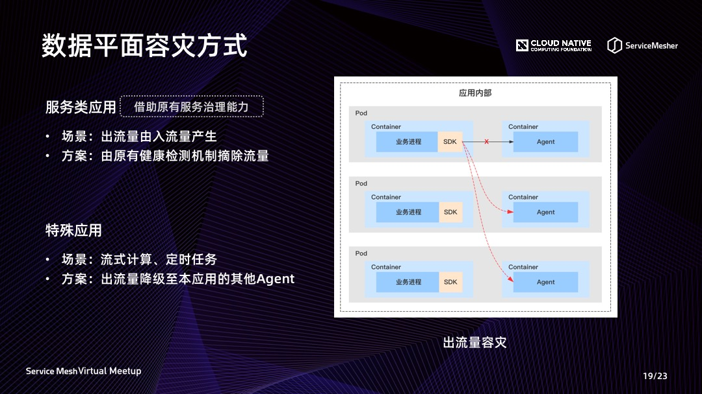
第三个关键方案是数据平面的容灾方式。这个方案中我们遵循的原则是尽可能简单，复用原有服务治理的能力。对于大多数应用，Agent 代理的出流量都是由入流量产生的，当 Agent 发生故障时，只要将入流量摘除，业务流量就不再受异常 Agent 的影响。由于代理入流量后注册服务的端口会改为由 Agent 监听，原有微服务体系的健康检测机制通常能直接满足容灾要求。
但也有一些特殊类型的应用，如流式计算节点、定时任务等，Agent 代理的出流量无法通过摘除入流量来容灾，此时需要单独设计出流量的容灾机制。在这种场景下将流量切换至同应用的其他 Agent 是最佳的选择，因为同应用内的 Agent 具有相同的配置、资源和鉴权要求。切换至本应用其他 Agent 的方案，具有最小的切换代价和最高的稳定性。
性能问题
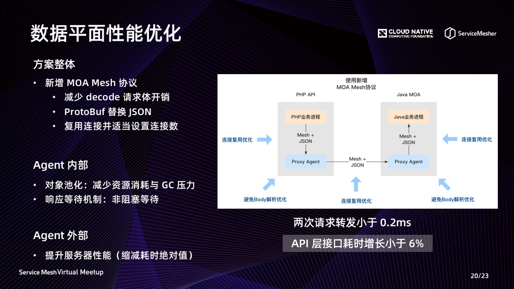
其他经常被关注的问题，首先是性能问题。在微服务体系中应用间的调用链路是非常复杂的，看似微小的耗时增长，叠加以后对顶层的接口与业务的影响也会是非常巨大的。因此 Agent 代理流量之后缩减服务调用的耗时增幅，是 Service Mesh 落地过程中非常重要的一个目标。
在整体方案上，我们需要考虑是否新增通信协议。MOA 原有的跨语言协议不包含 header 字段，因此 Agent 在转发请求时，必须 decode 整个请求体才能获得服务名、方法等请求路由信息。新协议加入可扩展的 header 字段后可消除这个步骤的开销。此外 header 字段不涉及业务请求数据的序列化，可以使用 ProtoBuf 代替 JSON 提升性能。Redis 协议不支持单连接并行处理请求，这一点可以加入 RequestId 进行连接复用优化，通过设置合理的连接数进一步优化性能。
Agent 内部我们也进行了一些优化工作，如针对 Java 语言减少 GC 压力的对象池机制，以及响应等待的非阻塞机制等。另外在缩减耗时增幅绝对值这个目标下，服务器性能是一个非常关键的因素。在衡量耗时增幅时需要使用和生产环境一致的服务器，而不能使用低配的测试服务器。
截止目前的测试结果来看，在 1K QPS 和 1K 消息体这个标准场景下，一次服务调用、Agent 两次请求转发的累计耗时增幅可以优化至小于 0.2ms。基于我们对整个服务端调用链路的分析，预计在所有服务都接入 Service Mesh 方案后，顶层 API 接口的耗时增幅将小于6%，这是一个我们能够接受的性能损耗成本。
资源问题
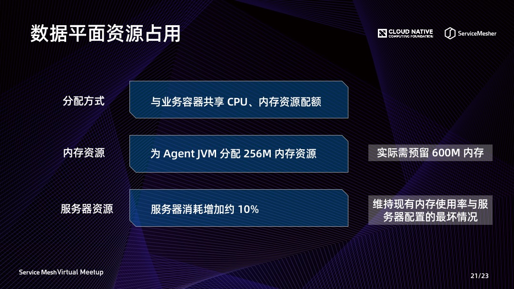
第二个重要的问题是资源消耗。首先在资源分配上，我们采用了 Agent 容器与业务容器共享资源配额的方案。由于业务进程与 Agent 进程二者是缺一不可的，这是一种比较合理的的分配方式。
在标准场景下，我们会为 Agent 分配 256M 的内存，算上可能使用到的堆外内存，运行时大约需要占用 300M 内存。由于平滑升级过程中，容器内会同时运行2个 Agent，所以实际需要预留 600M 的内存空间。
在这样的内存资源消耗下，我们评估全部服务接入 Service Mesh 方案后新增的服务器消耗约为 10%。但这项数据是维持现有内存使用百分比，以及服务器内存配置不变的最坏情况。实际在挖掘业务容器内存空间、采购大内存服务器后，这项数据可以进一步优化。
对于采用 Java 开发 Agent 的方案，资源消耗的劣势会非常明显，这一点是无法回避的问题。选择这个方向，是综合整体的情况考虑，通过牺牲服务器资源换取方案长期稳定性的一种选择。
兼容问题
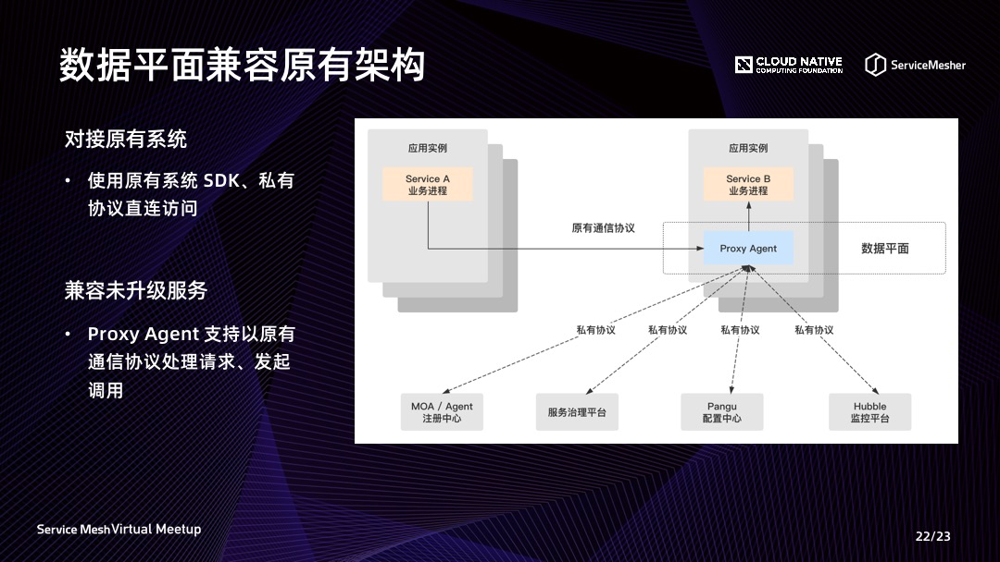
最后一个问题是关于如何兼容原有架构。一方面存在数据平面先上线，控制平面尚未就绪的状态。此时要求数据平面 Agent 能够与其他系统通过原有的 SDK 与接入方式进行对接，不会导致原有功能无法使用。另一方面一定会出现一部分服务先升级，另外一部分服务尚未升级的场景。此时为了支持两类服务间能够互相调用，Agent 必须支持以原有通信协议处理请求，以及根据服务端的升级情况选择适当的协议发起调用。
总结与展望
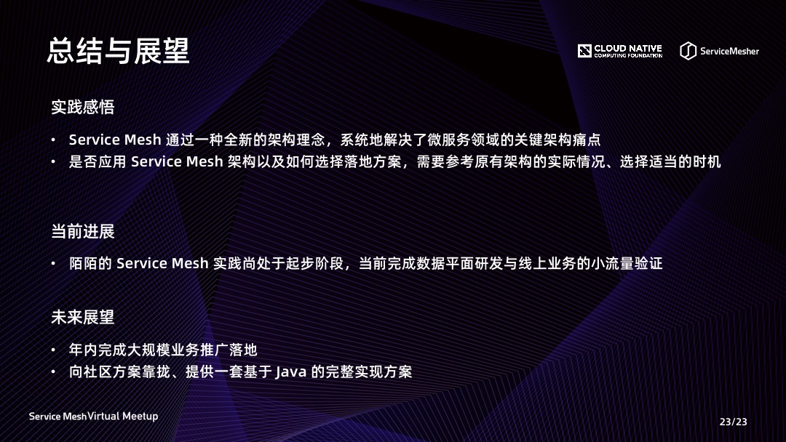
通过实践经历我们发现，Service Mesh 确实能够解决微服务领域的关键架构痛点。并且是以一种全新的理念，直接给出这些问题的最优解。但何时引入 Service Mesh 架构，需要结合实际情况、选择一个适当的时机，以便能快速达成目标。
陌陌当前的进展是完成了数据平面的研发与线上业务的小流量验证。未来还有很多的工作要做，业务大规模推广落地之后才能使 Service Mesh 的价值真正发挥出来，我们计划在年内实现这个目标。
长期规划中我们的方案会逐步向社区靠拢，因为通过社区的力量能够建设出更完善的产品。对于我们当前采用的基于 Java 的方案，我们也计划在整体方案完善之后通过开源等方式贡献给社区，提供给同样需要 Java 方案的公司和团队。
以上就是此次分享的全部内容，感谢大家的关注与支持！
嘉宾介绍
高飞航，陌陌中间件架构师，在微服务、多机房架构及中间件产品领域有较为深入的研究，当前关注 Service Mesh、云原生等技术方向。
回顾视频以及 PPT 下载地址
视频回顾：https://www.bilibili.com/video/BV1xQ4y1N7PR/
PPT 下载：https://github.com/servicemesher/meetup-slides/tree/master/2020/05/virtual